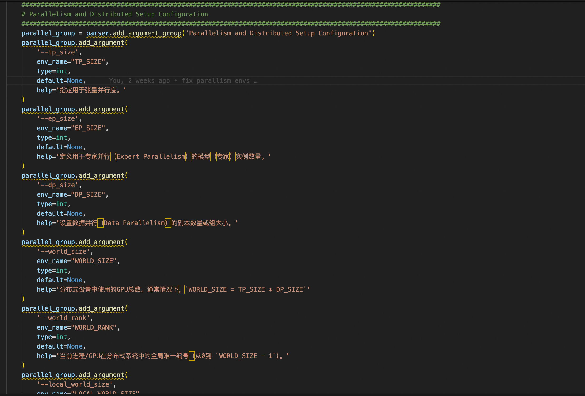
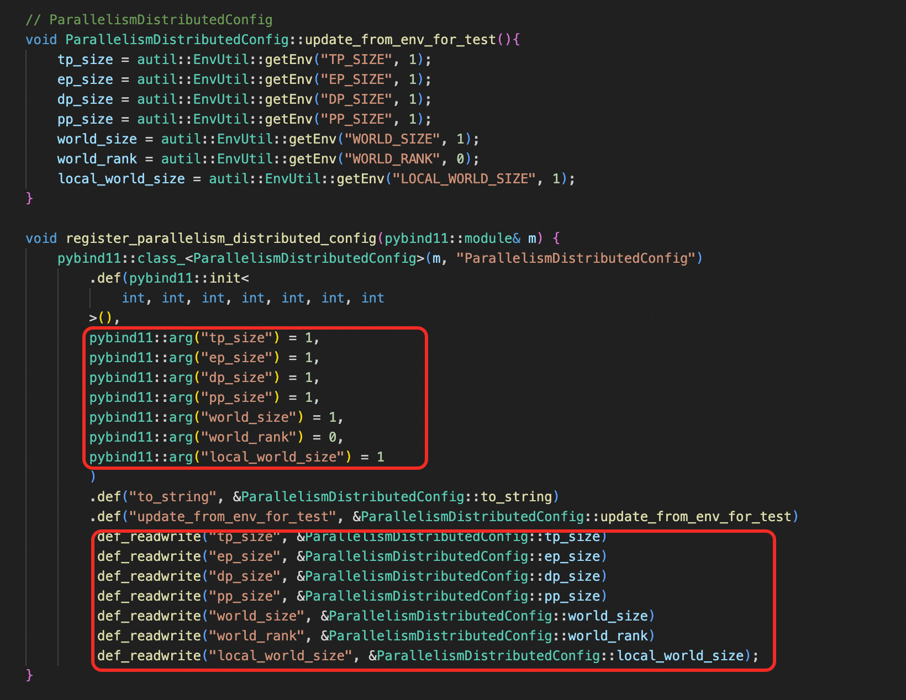

环境变量开发教程#
我们已经处理了RTP_LLM中所有与环境变量相关的代码，仅剩下一些与测试、监控、RDMA等相关的环境变量未处理。对于未来的开发，任何新的环境变量都应按照本文档统一处理。
Python参数解析#
在rtp_llm/server/server_args.py中，所有用户可配置的环境变量在启动Python服务时都会转换为命令行参数。如果您发现下面相关参数的注释不合理，请直接修改。

添加新的参数信息时，需要指定参数类型、变量名、默认值及其对应的具体含义。这里的处理逻辑实际上是使用解析的参数来更新环境变量。当前的优先级是：args > env > default。
参数传播#
我们已经收集和整理了所有与配置相关的信息，并在C++端和Python端都进行了分类处理。在C++端的顶层是GptInitParameter，它将C++中的各种环境变量分类到不同的配置类型中。在Python端，所有内容都在rtp_llm/config/py_config_modules.py下的EnvArgs中进行汇总。EnvArgs也对各种配置进行分类，整个系统中，各种配置会逐渐传播到指定位置供使用。
2.1 C++端参数传播#
在rtp_llm/cpp/th_op/ConfigModules.h中，所有相关的参数信息分类都放在这里。让我们通过以下示例来说明：
struct ParallelismDistributedConfig {
int tp_size = 1;
int ep_size = 1;
int dp_size = 1;
int pp_size = 1;
int world_size = 1;
int world_rank = 0;
int local_world_size = 1;
std::string to_string() const;
void update_from_env_for_test();
};
例如，在添加新参数后，您需要指定默认值并修改to_string和update_from_env_for_test函数的内容。此外，这些配置通过Pybind11绑定并传递到Python端进行交互。

需要注意的是，这里的参数顺序必须与结构体中定义的顺序一致。这是Pybind11的要求，因为我们需要稍后从Python端传递这些参数。具体来说，在rtp_llm/config/gpt_init_model_parameters.py中生成GptInitModelParameters时，会调用update_gpt_init_params_from_env进行更新处理。这里更新的GptInitParameter实际上是在C++中定义的。在rtp_llm/cpp/dataclass/EngineInitParameter.h中，参数在初始化期间被构造和更新。随后，这些参数根据需要逐层传播到相应的函数调用位置（所有参数都会向下传播）。
另一项需要完成的任务是，在更新新参数后，项目编译完成后，您需要执行以下操作：
$ cd rtp_llm/ops
$ bash rtp_llm/ops/gen_pyi.sh
这将在bazel-bin/stubs下生成相应的文件。在生成的文件中找到修改的部分并将其放入rtp_llm/ops中。
总结：
修改
rtp_llm/cpp/th_op/ConfigModules.h和rtp_llm/cpp/th_op/ConfigModules.cc修改
rtp_llm/config/gpt_init_model_parameters.py修改
rtp_llm/server/server_args.py修改
rtp_llm/server/test/server_args_test.py修改
rtp_llm/ops/libth_transformer.pyi
总共需要修改6个文件。
2.2 Python端参数传播#
Python端的环境变量比C++端多得多，两者之间存在一些重叠。我们将一些Python特有的环境变量合并到了C++端的配置分类中，其余的在Python端有自己独立的配置分类集合。
目前，我们的设计考虑了当前的代码架构。配置获取存在两种场景：一种是在某些全局方法或静态方法中，我们直接从rtp_llm/config/py_config_modules.py中的StaticConfig获取相应的配置参数，对于其他情况，我们通过传入py_env_configs配置来获取。此外，关于Python端环境变量的修改，我们遵循以下原则：
Principle: Environment variable settings in tests/Test environment variables/smoke test environment variables are all preserved. Global initialization environment variable settings and retrieval are also preserved (such as internal_source/rtp_llm/models/internal_init.py). env_param, etc., which exist for rpc_api transmission specification, are also preserved (such as rtp_llm/tools/api/model_size_evaluator_api.py).
在未来开发新环境变量时，必须遵循上述原则。Python环境变量的修改与C++端类似。以下是需要修改的具体代码位置：
rtp_llm/config/py_config_modules.pyrtp_llm/server/server_args.py（在同一目录下有许多相应的分类配置文件可以相应修改。）rtp_llm/server/test/server_args_test.py